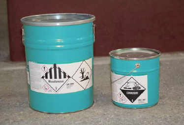
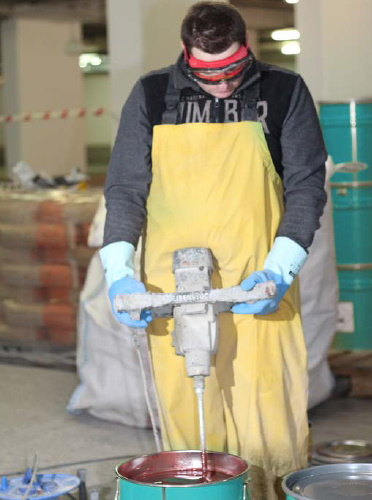
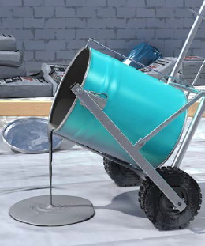
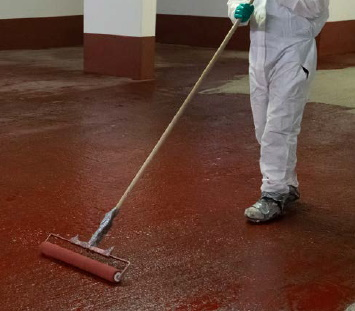
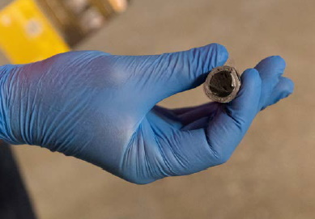

Die Hinweise zum Mischungsverhältnis der Komponenten sind unbedingt zu beachten. Fehlmischungen können zu mangelhaften Arbeitsergebnissen führen. Wann immer möglich, sollten Epoxidharz-Arbeitspackungen, bei denen sich die Komponenten bereits im richtigen Verhältnis zueinander befinden, verwendet werden. So entfällt die Gefahr einer falschen Dosierung3.
Können keine Arbeitspackungen verwendet werden, ist eine Waage zur Abmessung der Komponenten zu verwenden. Bei Großgebinden oder Fässern können technische Dosiersysteme verwendet werden. Dazu zählen z. B. Pumpen mit Durchflussmessern.

Abb. 3 Arbeitspackung mit getrennten Gebinden für Harz und Härter
8.1.1 Der Mischplatz
Bei der Mischung der Komponenten besteht ein beträchtliches Gefährdungspotenzial durch Hautkontakt und Einatmen. Der Mischbehälter sollte auf eine ebene Fläche gestellt werden, denn durch kippende Behälter kann es zu Spritzern oder zum Verschütten kommen.
Zusätzlich ist darauf zu achten, dass die umgebende Oberfläche nicht durch Epoxidharz-Produkte verunreinigt wird. Dies kann vermieden werden, indem Eimer oder Behälter z. B. auf eine Folie gestellt werden.
Der Bereich, in dem das Mischen stattfindet, sollte deutlich gekennzeichnet sein, damit andere Personen nicht mit den Produkten in Kontakt kommen. Zu diesem Zweck können Absperrbänder oder Warnschilder (z. B. W001, Warnung vor Gefahrenstelle) eingesetzt werden.
8.1.2 Anmischen des Produktes

Abb. 4 Anmischen von Epoxidharz
a) Mischen per Hand
Das Mischen der beiden Komponenten von Epoxidharz-Produkten wird häufig in dem Originalgebinde durchgeführt, in dem sich das Harz befindet. Tipps für das sichere Vorgehen beim Anmischen:
b) Mischen im Zwangsmischer
c) Mischen von Injektionsharzen
Injektionsharze, die für Betonsanierungen eingesetzt werden, können in automatischen Misch- und Dosiersystemen verwendet werden. Diese tragen dazu bei, einen möglichen Hautkontakt zu reduzieren.
Ein richtig gewähltes Arbeitsverfahren trägt dazu bei, den Kontakt mit Epoxidharz-Produkten einzuschränken. Oberstes Ziel sollte sein, die Arbeitsverfahren so zu gestalten, dass ein Hautkontakt zu Harz, Härter oder nicht vollständig ausgehärteter Mischung vermieden wird.
In vielen Fällen finden in der Nähe des Arbeitsplatzes, an dem mit Epoxidharz gearbeitet wird, auch andere Arbeiten statt. Die Beschäftigten, die an den Arbeiten mit Epoxidharz nicht beteiligt sind, müssen gegen einen möglichen Kontakt mit diesen Produkten geschützt werden. Wenn notwendig, ist der Arbeitsbereich zu kennzeichnen oder abzugrenzen.
Relativ einfache Maßnahmen können dazu beitragen, die Risiken eines Hautkontaktes zu vermeiden:
Bei Arbeiten in geschlossenen Räumen oder mit lösemittelhaltigen Epoxidharzen sollte für eine ausreichende Lüftung gesorgt werden.
In der Nähe des Arbeitsplatzes müssen Wasch- und Umkleidemöglichkeiten bereitgestellt werden. Den Beschäftigten ist die Anweisung zu geben, Straßenkleidung von beschmutzter Arbeits- und Schutzbekleidung und Werkzeugen getrennt zu halten.
Im Waschbereich sollten vorhanden sein
Die Schutzbekleidung ist vor Betreten der Pausenräume abzulegen, damit eine Verschleppung der Epoxidharz-Produkte vermieden wird. In Pausenräumen dürfen Epoxidharz-Produkte nicht aufbewahrt werden.
8.4.1 Transport der Mischungen zum Einbauort
Vor Ort können die Materialien im Mischgefäß am besten mit Hilfe von Transportwagen zum Einbauort transportiert werden. Diese können auch zum Ausgießen des Produktes verwendet werden.
Das Material ist so dicht wie möglich am Boden auszugießen, damit es nicht zu Spritzern kommt. Angemischtes Material muss zur Abführung der Reaktionswärme zügig ausgegossen und verteilt werden. Bei sehr großen Flächen (z. B. Parkdecks) ist eine Materialverteilung mit Maschinen möglich. Angaben der herstellenden Firma beachten!

Abb. 5 Transportwagen zum Transport und zum Ausgießen

Abb. 6 Verteilen des Harzes mit langstieligen Werkzeugen
8.4.2 Auftragen von Epoxidharzen durch Aufrollen oder Verteilen mit Gummiwischer/Zahnrakel
Das Material sollte mit langstieligen Rollen aufgerollt oder mit langstieligen Gummiwischern verteilt werden. Dies ermöglicht es, im Stehen zu arbeiten. So reduziert sich das Risiko eines Hautkontaktes.
8.4.3 Verfugungs- und Spachtelarbeiten
Beim Verfugen und Spachteln mit Epoxidharz kann es erforderlich sein, im Knien zu arbeiten.
In solchen Fällen sollte zusätzlich zu Knieschonern eine saubere weiche Unterlage (Styroporplatte, Pappe o. ä.) verwendet werden, um eine Verunreinigung der Hosenbeine zu vermeiden und die Knie zu schützen.
Beim Aufbringen von Ausgleichs- und Kratzspachtelungen können die Materialien teilweise auch stehend mit einem langstieligen Rakel oder einem Hartgummiwischer aufgebracht werden.
8.4.4 Verarbeitung von 2-Komponenten-Klebstoffen und -Reparaturmassen
Das Dosieren und Mischen der Komponenten kann umgangen werden, indem Mehrkomponenten-Kartuschensysteme (z. B. Kartuschenpistole) verwendet werden. Die Komponenten werden hierbei automatisch im richtigen Verhältnis vermischt.
Müssen Materialien von Hand gemischt werden, sind geeignete Arbeitsgeräte und Hilfsmittel (Rührstab, Pappbecher etc.) zu verwenden. Zum Auftragen der Materialien Werkzeuge und Hilfsmittel verwenden, die einen Hautkontakt verhindern (Pinsel, Spatel, Fixierhilfen).
8.4.5 Verarbeitung von Knetmassen
Bei der Verarbeitung von Knetmassen kann der Hautkontakt zu Gesundheitsschäden (Hautreizung bzw. Allergien) führen. Personen mit einer Epoxidharz-Allergie sollten keinen Kontakt mit diesem Stoff haben. Die Produkte sind brennbar.

Abb. 7 Epoxidharzknetmasse; die Verarbeitung muss mit geeigneten Schutzhandschuhen erfolgen (s. Anhang 3)
8.4.6 Injektion von Epoxidharzen
Tipps für ein sicheres Vorgehen bei der Rissverpressung:
Eine Reinigung mit organischen Lösemitteln sollte vermieden werden. Tipps für die sichere Reinigung:
3 Auf dem Markt werden einige Arbeitspackungen angeboten, bei denen die Härterverpackung durchstoßen wird und der Härter zur Mischung in das darunter befindliche Harzgebinde läuft. Das Gebinde mit der Durchstossvorrichtung kann aber nicht restentleert werden. Daher tropft die Härter-Komponente nachträglich noch aus und kann zu Kontaminationen der Haut, der Arbeitskleidung und Arbeitsumgebung führen.